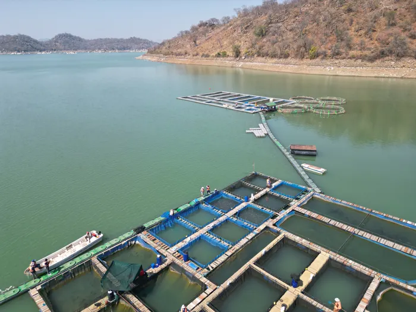
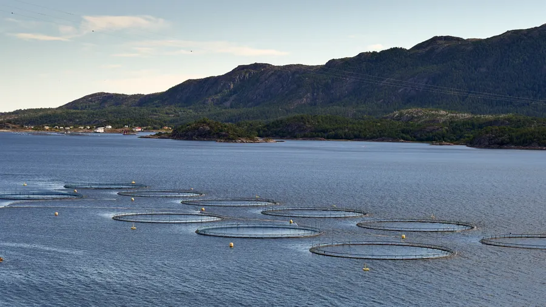
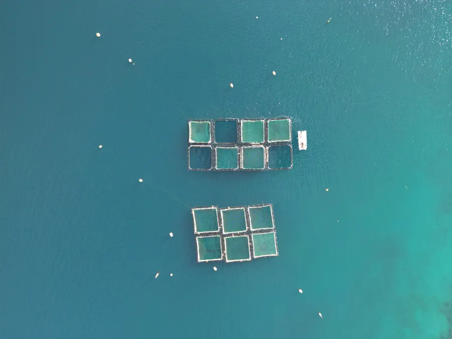
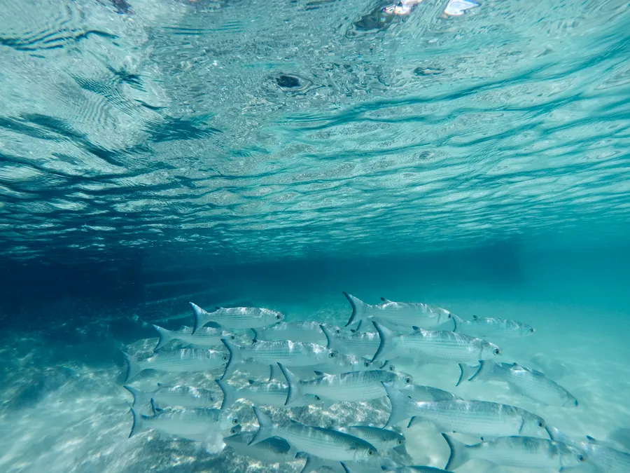
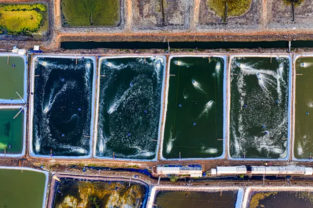

DeepCurrent turns fish farms into live, readable systems � water quality, feeding, and biomass tracked by sensors and AI, from hatchery to harvest.

Water chemistry shifts in hours, not days. By the time a farmer notices stressed fish, oxygen may have been low for a night. We build the instruments that catch it first � quietly, in the background, on hardware built for salt water and rough weather.
DeepCurrent combines field hardware with simple software so farm teams can see problems while they are still small.
Track oxygen, pH, temperature, salinity and ammonia from the actual pen or pond.
Underwater cameras help estimate biomass, feeding response and early stress signals.
Auto-feeders adjust portions based on appetite instead of fixed schedules.
Plain-language alerts reach the people on shift before a water issue becomes a loss.
Buoys, probes and cameras are placed around pens, cages, ponds or RAS tanks.
Readings stream continuously through the site gateway, even with patchy connectivity.
Models compare live data against the farm's normal patterns and flag unusual shifts.
The crew gets a clear alert, suggested next step and a record for the farm log.
Choose only the modules your site needs today, then add cameras, feeders or extra probes as the farm grows.

Solar-powered multi-parameter water probe for open water and ponds.

Responsive feeders that reduce waste and keep feeding records clean.

Low-light camera pod for stock checks and biomass estimation.

Alerts, trends, harvest notes and service status in one mobile dashboard.
Small improvements in oxygen response, feeding and mortality prevention compound across a whole growth cycle.
Connected sites reporting improved feed discipline within one cycle.
Early alerts help crews respond before water quality crashes.
Anomalies are caught while there is still time to act.
We caught a low-oxygen night at 2am instead of finding out at feeding time.
The feeder data helped us stop guessing and start tuning per pond.
The app is simple enough for the whole crew to check every morning.
Tell us your species, site size and pen count � we'll size a starter kit and get it shipped.